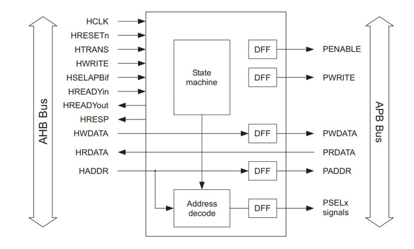

The AHB to APB bridge acts as a mediator between the AHB and APB buses, enabling communication between them. It translates the signals used by each bus, allowing devices connected to the APB bus to be accessed by the microprocessor through the AHB bus.
Here I wrote the verilog code for differnt modules invoved and also testbench to simulate and verify the design.

We will start by coding a design in VHDL or Verilog. We will simulate the coded design, followed by design synthesis and optimization. We will then run equivalency checks at different stages of the flow. After synthesizing the design, We will floorplan, and place-and-route the synthesized netlist while meeting timing. We will run a gate-level simulation throughout the flow. Finally, we will write out a GDSII file.

Image Compression is an algorithm which reduces the size of the data to reduce the amount of space required to store the data. The Discrete cosine transform (DCT) is a method for transforming a signal or image from spatial domain to its respective frequency domain component. In this project, MATLAB was used to write and execute the algorithm.

An analog multiplier is a device having two input ports and an output port. The signal at the output is the product of the two input signals. If both input and output signals are voltages, the transfer characteristic is the product of the two voltages multiplied by a scaling factor, K .
The proposed analog multiplier is designed using
• Logarithmic amplifiers
• antilogarithmic amplifiers
• summing amplifiers

Huffman encoding algorithm was implemented in MATLAB.
The Huffman dictionary for the encoding algorithm was implemented without built-in function.

Decimation in Time (DIT) Radix 2 FFT algorithm converts the time domain N
point sequence x(n) to a frequency domain N-point sequence X(k).In Decimation in
Time algorithm the time domain sequence x(n) is decimated and smaller point DFT are
performed. The results of smaller point DFTs are combined to get the result of N-point
DFT.